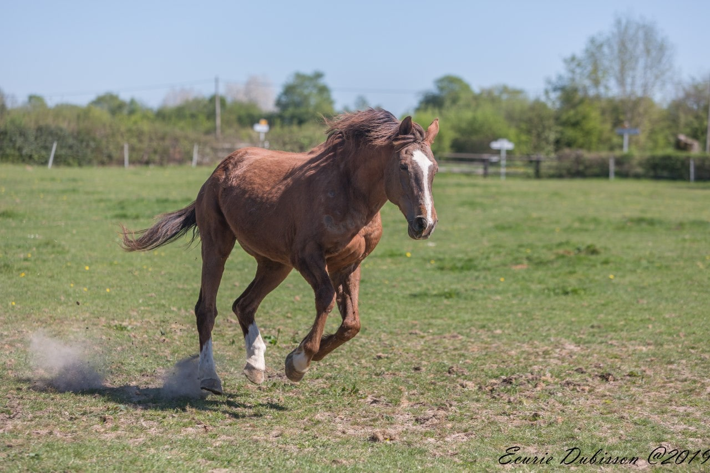
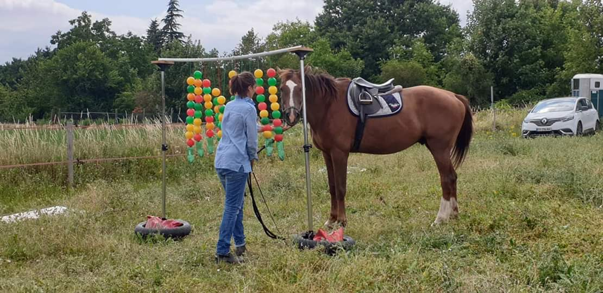

Kenzo du Hautbois
Kenzo du Hautbois, Selle-français.
Kenzo est mon premier cheval. Il est aussi mon unique cheval pour l'instant. C'est un selle-français, élevé initialement pour participer à des concours de CSO. Il a eu la chance de rencontrer sa première propriétaire, puis moi, qui aimions davantage les randonnées que les terrains de concours.
C'est un cheval émotif et attachant. S'il peut paraître parfois éteint et "dans sa bulle", un rien peut l'émouvoir et le mettre dans tous ses états.
On dit souvent qu'un cheval peut emmener son cavalier partout si la confiance est présente. C'est le cas avec Kenzo et j'ai connu certains de mes plus beaux souvenirs avec lui, en totale confiance. Nous l'avons aussi perdu cette confiance pendant un moment et la peur a pris beaucoup trop de place dans notre relation. Nous avons réussi à y faire face, mais cela a pris du temps.
Etre propriétaire d'un cheval c'est être responsable d'un animal de plus de 400 kilos qui peut vivre jusqu'à plus de 30 ans. Essayer de comprendre son cheval, c'est le travail d'une vie. Un cheval aura toujours quelque chose à nous apprendre. Que ce soit mieux gérer ses émotions, savoir se remettre en question, mieux dialoguer sans parole et rien qu'avec son corps, être à l'écoute de ses sensations. Etre à l'écoute des ressentis de l'autre et des autres. Les chevaux sont une merveilleuse école de la vie.
Kenzo m'a appris à être plus forte, à ne pas abandonner. Il m'a appris à faire confiance et à redonner cette confiance. Il m'a accompagnée de mon adolescence à l'âge adulte et j'ai toujours essayé de lui donner la place qu'il méritait.
Kenzo a 22 ans aujourd'hui et il vit sa deuxième jeunesse dans une pension de rêve en Normandie (aller voir ici). J'ai choisi de le voir moins souvent mais de le voir plus heureux en lui offrant les conditions idéales pour sa retraite.